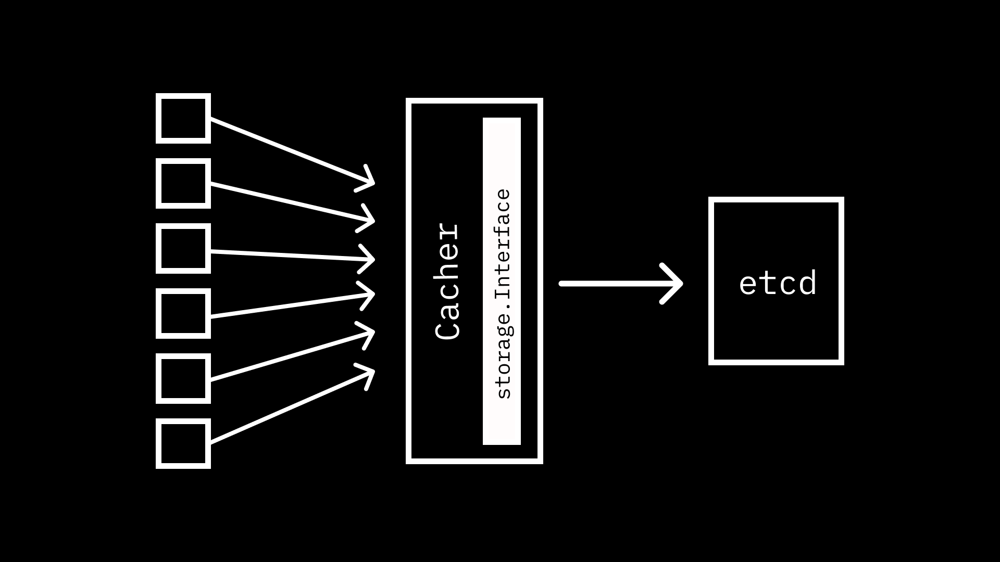
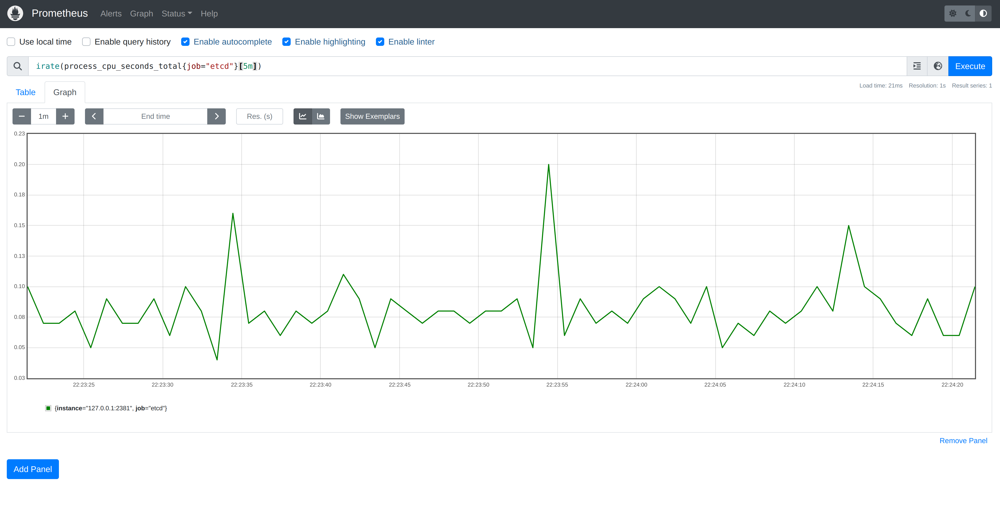
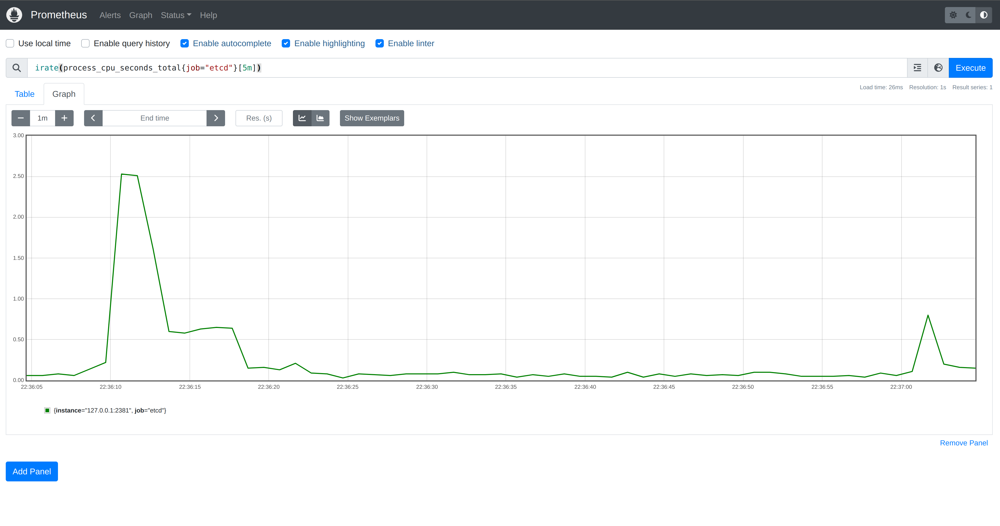
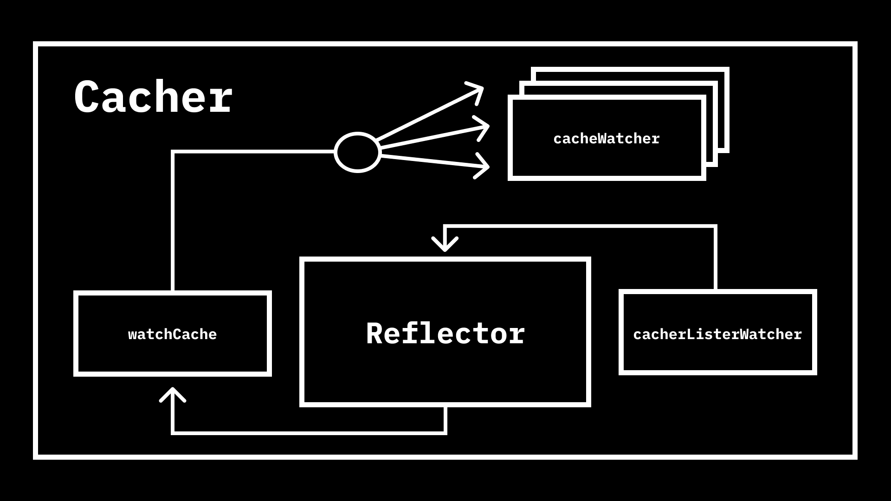
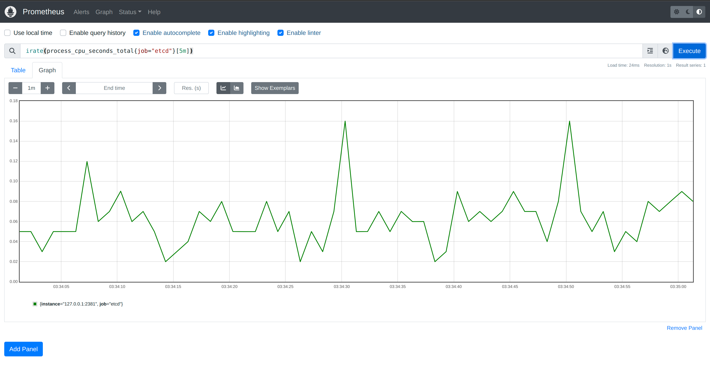

In our most recent
post in the
Kubernetes API Server Adventures
series
we took a look at the storage
interface
and explored the only in-tree implementation:
etcd3.
However, a careful read of the
footnotes
in that post revealed I wasn’t being completely honest about etcd3 being the
only implementation.
This could be disputed as
Cacheris technically an implementation as well. However, it requires an underlying implementation in order to perform its operations. We’ll be looking at caching extensively in a future post.
It is time to make things right! I promised we would be looking at caching extensively and the time has come to do so.

Table of Contents:
- Watching (👈 “I want the problem and the solution.”)
- Everyone’s Watching
- Caching (👈 “I just want the solution.”)
- Everyone’s Watching… Efficiently (👈 “Just show me the code.”)
Watching Link to heading
Before we introduce any type of caching, it is worth revisiting the fact that
storage.Interface
includes a Watch
method,
the etcd3 implementation supports
it,
and we previously
explored
watching for changes by talking directly to etcd with etcdctl. etcd offers
a Watch API that utilizes
bi-directional gRPC
streams
to deliver events to clients when the value for a given key changes.
The etcd3 Watch implementation
constructs
a
watch.Interface
that is backed by a
watcher.
A new watcher is constructed on every call to Watch, and each watcher
essentially just calls the etcd Watch
API
and forwards events on a
channel.
Let’s take our program from last post and modify it to watch for changes to all
ConfigMaps in a cluster.
You can find instructions on how to get the PKI data needed to talk to
etcdin akindcluster here.
directwatch.go
package main
import (
"context"
"fmt"
"go.etcd.io/etcd/client/pkg/v3/transport"
clientv3 "go.etcd.io/etcd/client/v3"
v1 "k8s.io/api/core/v1"
"k8s.io/apimachinery/pkg/runtime"
"k8s.io/apimachinery/pkg/runtime/serializer"
"k8s.io/apiserver/pkg/storage"
"k8s.io/apiserver/pkg/storage/etcd3"
"k8s.io/apiserver/pkg/storage/value/encrypt/identity"
"k8s.io/kubernetes/pkg/apis/core"
k8sv1 "k8s.io/kubernetes/pkg/apis/core/v1"
)
func main() {
tlsConfig, err := (transport.TLSInfo{
CertFile: "./pki/etcd/server.crt",
KeyFile: "./pki/etcd/server.key",
TrustedCAFile: "./pki/etcd/ca.crt",
ClientCertFile: "./pki/apiserver-etcd-client.crt",
ClientKeyFile: "./pki/apiserver-etcd-client.key",
}).ClientConfig()
if err != nil {
panic(err)
}
c, err := clientv3.New(clientv3.Config{
Endpoints: []string{"https://127.0.0.1:2379"},
TLS: tlsConfig,
})
if err != nil {
panic(err)
}
scheme := runtime.NewScheme()
k8sv1.AddToScheme(scheme)
core.AddToScheme(scheme)
f := serializer.NewCodecFactory(scheme)
s := etcd3.New(c, f.CodecForVersions(nil, f.UniversalDecoder(), nil, k8sv1.SchemeGroupVersion), nil, "registry", v1.Resource("ConfigMap"), identity.NewEncryptCheckTransformer(), true, etcd3.NewDefaultLeaseManagerConfig())
w, err := s.Watch(context.Background(), "configmaps", storage.ListOptions{
Predicate: storage.Everything,
Recursive: true,
})
if err != nil {
panic(err)
}
for e := range w.ResultChan() {
co, ok := e.Object.(*v1.ConfigMap)
if !ok {
panic("not a config map!")
}
fmt.Printf("%s || %s/%s\n", e.Type, co.Namespace, co.Name)
}
}
Take note of the fact that we are registering types from
k8s.io/kubernetesrather thank8s.io/api. This is necessary in order to perform conversion from the__internalversion to our desired version (v1). Note that we also are passing anilencoder toCodecForVersionsas we are only decoding while reading events off the stream.
If you have a kind cluster running, you can start port-forwarding the etcd
Pod.
$ kubectl port-forward -n kube-system pod/etcd-kind-control-plane 2379:2379
Now we can start our program.
$ go run directwatch.go
ADDED || default/kube-root-ca.crt
ADDED || kube-node-lease/kube-root-ca.crt
ADDED || kube-public/cluster-info
ADDED || kube-public/kube-root-ca.crt
ADDED || kube-system/coredns
ADDED || kube-system/extension-apiserver-authentication
ADDED || kube-system/kube-proxy
ADDED || kube-system/kube-root-ca.crt
ADDED || kube-system/kubeadm-config
ADDED || kube-system/kubelet-config
ADDED || local-path-storage/kube-root-ca.crt
ADDED || local-path-storage/local-path-config
As expected, we get ADDED events for all ConfigMaps currently in the
cluster. We can create, update, and delete a ConfigMap to see how other events
are reflected in our watch stream.
$ kubectl create configmap k8s-asa --from-literal hello=world
configmap/k8s-asa created
$ kubectl create configmap k8s-asa --from-literal hello=asa -o yaml --dry-run | kubectl apply -f -
configmap/k8s-asa configured
$ kubectl delete configmap k8s-asa
configmap "k8s-asa" deleted
We should see each of these events in our watch stream with the appropriate type.
ADDED || default/k8s-asa
MODIFIED || default/k8s-asa
DELETED || default/k8s-asa
Everyone’s Watching Link to heading
This is all working quite well. We are able to get events any time a type we
care about changes, and it doesn’t seem as though etcd or our little program
are breaking a sweat, but let’s take a look at some etcd metrics to make sure.
We can find the exposed metrics address for etcd in our kind cluster by
looking at command for the container in the Pod.
$ kubectl get pod -n kube-system etcd-kind-control-plane -o=jsonpath={.spec.containers[0].command} | jq .
[
"etcd",
"--advertise-client-urls=https://172.19.0.2:2379",
"--cert-file=/etc/kubernetes/pki/etcd/server.crt",
"--client-cert-auth=true",
"--data-dir=/var/lib/etcd",
"--experimental-initial-corrupt-check=true",
"--experimental-watch-progress-notify-interval=5s",
"--initial-advertise-peer-urls=https://172.19.0.2:2380",
"--initial-cluster=kind-control-plane=https://172.19.0.2:2380",
"--key-file=/etc/kubernetes/pki/etcd/server.key",
"--listen-client-urls=https://127.0.0.1:2379,https://172.19.0.2:2379",
"--listen-metrics-urls=http://127.0.0.1:2381",
"--listen-peer-urls=https://172.19.0.2:2380",
"--name=kind-control-plane",
"--peer-cert-file=/etc/kubernetes/pki/etcd/peer.crt",
"--peer-client-cert-auth=true",
"--peer-key-file=/etc/kubernetes/pki/etcd/peer.key",
"--peer-trusted-ca-file=/etc/kubernetes/pki/etcd/ca.crt",
"--snapshot-count=10000",
"--trusted-ca-file=/etc/kubernetes/pki/etcd/ca.crt"
]
The --listen-metrics-urls is what we are looking for. etcd will serve
Prometheus metrics on the /metrics endpoint at this address. We can craft
a minimal Prometheus configuration file to instruct the collector to scrape
etcd.
prometheus.yml
global:
scrape_interval: 1s
scrape_configs:
- job_name: etcd
static_configs:
- targets: ['127.0.0.1:2379']
Before we start Prometheus, we’ll need to make sure that we are able to access
the etcd metrics endpoint. Port-forwarding to the host network namespace
allows us to also run Prometheus in the host network namespace, which simplifies
accessing the dashboard in the browser.
Port-forward the etcd metrics endpoint.
$ kubectl port-forward -n kube-system pod/etcd-kind-control-plane 2381:2381
Then start Prometheus container attached to the host network.
$ docker run --net=host --rm -v $(pwd)/prometheus.yml:/etc/prometheus/prometheus.yml prom/prometheus
The Prometheus dashboard should now be accessible in the browser at
127.0.0.1:9090. We can get a graph of metrics etcd exposes by entering a
query. For example, irate(process_cpu_seconds_total{job="etcd"}[5m]) will show
us the rate of increase of total system and user CPU time. If we now run our
program that establishes watches on ConfigMaps, we shouldn’t see a meaningful
impact on CPU.

Y-axis range is
0.03to0.23.
Note: Remember that since we are running
etcdin akindcluster, the Kubernetes API Server, as well as other components, are interacting with it in addition to the load from our program.
This is to be expected: one watch is unlikely to have a significant impact.
However, if we increase the number of watches, we are going to start to see some
problems. Let’s adjust our program to start 10,000 watches on ConfigMaps.
manydirectwatch.go
package main
import (
"context"
"fmt"
"os"
"os/signal"
"go.etcd.io/etcd/client/pkg/v3/transport"
clientv3 "go.etcd.io/etcd/client/v3"
v1 "k8s.io/api/core/v1"
"k8s.io/apimachinery/pkg/runtime"
"k8s.io/apimachinery/pkg/runtime/serializer"
"k8s.io/apiserver/pkg/storage"
"k8s.io/apiserver/pkg/storage/etcd3"
"k8s.io/apiserver/pkg/storage/value/encrypt/identity"
"k8s.io/kubernetes/pkg/apis/core"
k8sv1 "k8s.io/kubernetes/pkg/apis/core/v1"
)
func main() {
tlsConfig, err := (transport.TLSInfo{
CertFile: "./pki/etcd/server.crt",
KeyFile: "./pki/etcd/server.key",
TrustedCAFile: "./pki/etcd/ca.crt",
ClientCertFile: "./pki/apiserver-etcd-client.crt",
ClientKeyFile: "./pki/apiserver-etcd-client.key",
}).ClientConfig()
if err != nil {
panic(err)
}
c, err := clientv3.New(clientv3.Config{
Endpoints: []string{"https://127.0.0.1:2379"},
TLS: tlsConfig,
})
if err != nil {
panic(err)
}
scheme := runtime.NewScheme()
k8sv1.AddToScheme(scheme)
core.AddToScheme(scheme)
f := serializer.NewCodecFactory(scheme)
s := etcd3.New(c, f.CodecForVersions(nil, f.UniversalDecoder(), nil, k8sv1.SchemeGroupVersion), nil, "registry", v1.Resource("ConfigMap"), identity.NewEncryptCheckTransformer(), true, etcd3.NewDefaultLeaseManagerConfig())
for i := 0; i < 10000; i++ {
w, err := s.Watch(context.Background(), "configmaps", storage.ListOptions{
Predicate: storage.Everything,
Recursive: true,
})
if err != nil {
panic(err)
}
go func() {
for e := range w.ResultChan() {
co, ok := e.Object.(*v1.ConfigMap)
if !ok {
panic("not a config map!")
}
fmt.Printf("%s || %s/%s\n", e.Type, co.Namespace, co.Name)
}
}()
}
stop := make(chan os.Signal)
signal.Notify(stop, os.Interrupt)
<-stop
}
If we start our program now, we should see all 10,000 watches getting a list of
all ConfigMaps in the cluster. If we create a new ConfigMap, we can see all
watches being notified.
$ go run manysimplewatch.go
...
ADDED || kube-system/kube-proxy
ADDED || kube-system/kube-root-ca.crt
ADDED || kube-system/kubeadm-config
ADDED || kube-system/kubelet-config
ADDED || local-path-storage/kube-root-ca.crt
ADDED || local-path-storage/local-path-config
ADDED || kube-system/kube-root-ca.crt
ADDED || kube-system/kubeadm-config
ADDED || kube-system/kubelet-config
ADDED || local-path-storage/kube-root-ca.crt
ADDED || local-path-storage/local-path-config
...
$ kubectl create configmap testing
configmap/testing created
...
ADDED || default/testing
ADDED || default/testing
ADDED || default/testing
ADDED || default/testing
ADDED || default/testing
ADDED || default/testing
ADDED || default/testing
ADDED || default/testing
ADDED || default/testing
ADDED || default/testing
...
Looking back at our etcd metrics, we can see a significant spike in CPU at
program startup. This is concerning, but perhaps even more troublesome is the
amount of work incurred when we created a new ConfigMap. While the load is
simulated in our program, the Kubernetes API Server may service many watch
requests from various clients. Establishing a watch in etcd for each is
unnecessary as the API Server only needs one notification in order to
subsequently inform all clients.

Y-axis range is
0.00to3.00.
The first large spike corresponds to when our program started. The second spike, albeit smaller, corresponds to creating a single
ConfigMapwith 10,000 watches established.
Caching Link to heading
As you may have guessed, the Kubernetes API Server makes use of a caching
strategy to address this issue, and interacting with the caching layer is much
like calling the etcd3 storage.Interface implementation directly. In fact,
the caching layer implements storage.Interface as well.
When constructing a
cacher.Cacher
a Config struct is passed that includes a storage.Interface implementation.
As denoted in the
docstring:
// Cacher implements storage.Interface (although most of the calls are just
// delegated to the underlying storage).
For example, because etcd informs a watcher of creation events (ADDED), the
Create()
implementation
of Cacher directly calls the underlying storage’s Create().
// Create implements storage.Interface.
func (c *Cacher) Create(ctx context.Context, key string, obj, out runtime.Object, ttl uint64) error {
return c.storage.Create(ctx, key, obj, out, ttl)
}
Other methods perform minor operations before calling the underlying storage,
but Watch() doesn’t directly interact with it at all. Instead, it constructs a
new
cacheWatcher
and starts its event processing loop. Before looking into how the cacheWatcher
works, it is necessary to understand how events are delivered from etcd to all
the watchers started by this method. When the Cacher is constructed, it
creates three important underlying components, two of which are implementations
of more generic interfaces in the
client-go
cache
package:
watchCache, which is an implementation ofcache.StorecacherListerWatcher, which is an implementation ofcache.ListerWatcher.Reflectoraccepts implementations of the two previously mentioned interfaces, and uses the latter to populate the former.
Let’s dig into each of these in more depth.
watchCache
Link to heading
The watchCache is where the actual cache of events that are served to watchers
are stored. It is a sliding window with a resizable capacity, meaning that when
a new item is added, we either drop the oldest or expand the size of the cache
to accommodate adding the new item. As previously mentioned, watchCache
implements cache.Store, which supports the following methods.
type Store interface {
// Add adds the given object to the accumulator associated with the given object's key
Add(obj interface{}) error
// Update updates the given object in the accumulator associated with the given object's key
Update(obj interface{}) error
// Delete deletes the given object from the accumulator associated with the given object's key
Delete(obj interface{}) error
// List returns a list of all the currently non-empty accumulators
List() []interface{}
// ListKeys returns a list of all the keys currently associated with non-empty accumulators
ListKeys() []string
// Get returns the accumulator associated with the given object's key
Get(obj interface{}) (item interface{}, exists bool, err error)
// GetByKey returns the accumulator associated with the given key
GetByKey(key string) (item interface{}, exists bool, err error)
// Replace will delete the contents of the store, using instead the
// given list. Store takes ownership of the list, you should not reference
// it after calling this function.
Replace([]interface{}, string) error
// Resync is meaningless in the terms appearing here but has
// meaning in some implementations that have non-trivial
// additional behavior (e.g., DeltaFIFO).
Resync() error
}
The Add(), Update(), and Delete() implementations construct a
watch.Event,
then pass it along to the processEvent()
method.
Here the event is transformed into a
watchCacheEvent,
which ultimately gets passed to
updateCache().
The updateCache() method, along with the
resizeCacheLocked()
method it calls, are where the sliding window logic is implemented.
// Assumes that lock is already held for write.
func (w *watchCache) updateCache(event *watchCacheEvent) {
w.resizeCacheLocked(event.RecordTime)
if w.isCacheFullLocked() {
// Cache is full - remove the oldest element.
w.startIndex++
}
w.cache[w.endIndex%w.capacity] = event
w.endIndex++
}
// resizeCacheLocked resizes the cache if necessary:
// - increases capacity by 2x if cache is full and all cached events occurred within last eventFreshDuration.
// - decreases capacity by 2x when recent quarter of events occurred outside of eventFreshDuration(protect watchCache from flapping).
func (w *watchCache) resizeCacheLocked(eventTime time.Time) {
if w.isCacheFullLocked() && eventTime.Sub(w.cache[w.startIndex%w.capacity].RecordTime) < eventFreshDuration {
capacity := min(w.capacity*2, w.upperBoundCapacity)
if capacity > w.capacity {
w.doCacheResizeLocked(capacity)
}
return
}
if w.isCacheFullLocked() && eventTime.Sub(w.cache[(w.endIndex-w.capacity/4)%w.capacity].RecordTime) > eventFreshDuration {
capacity := max(w.capacity/2, w.lowerBoundCapacity)
if capacity < w.capacity {
w.doCacheResizeLocked(capacity)
}
return
}
}
Before returning from processEvent(), an eventHandler() function is
invoked
if one was passed during watchCache construction. We’ll revisit this shortly
when we look at how watchers are notified of events.
// Avoid calling event handler under lock.
// This is safe as long as there is at most one call to Add/Update/Delete and
// UpdateResourceVersion in flight at any point in time, which is true now,
// because reflector calls them synchronously from its main thread.
if w.eventHandler != nil {
w.eventHandler(wcEvent)
}
Other methods, particularly those that involve getting and listing, rely on an
underlying
cache.Indexer.
Ultimately, the simple
indexer
constructed in the
watchCache
boils down to a thread-safe
map.
While the sliding window of events in the watchCache allows us to send updates
to many different watchers, the indexer allows for new watchers to easily get
the latest state of objects, which is required when starting a watch.
Together, these two mechanisms allow for many requests to be served from their
in-memory store, rather than having to reach out to etcd directly.
cacherListerWatcher
Link to heading
The cacherListerWatcher is much simpler than the watchCache, as it
essentially wraps the storage.Interface that is passed to the Cacher and
calls the underlying GetList() and Watch() methods.
// NewCacherListerWatcher returns a storage.Interface backed ListerWatcher.
func NewCacherListerWatcher(storage storage.Interface, resourcePrefix string, newListFunc func() runtime.Object) cache.ListerWatcher {
return &cacherListerWatcher{
storage: storage,
resourcePrefix: resourcePrefix,
newListFunc: newListFunc,
}
}
// Implements cache.ListerWatcher interface.
func (lw *cacherListerWatcher) List(options metav1.ListOptions) (runtime.Object, error) {
list := lw.newListFunc()
pred := storage.SelectionPredicate{
Label: labels.Everything(),
Field: fields.Everything(),
Limit: options.Limit,
Continue: options.Continue,
}
storageOpts := storage.ListOptions{
ResourceVersionMatch: options.ResourceVersionMatch,
Predicate: pred,
Recursive: true,
}
if err := lw.storage.GetList(context.TODO(), lw.resourcePrefix, storageOpts, list); err != nil {
return nil, err
}
return list, nil
}
// Implements cache.ListerWatcher interface.
func (lw *cacherListerWatcher) Watch(options metav1.ListOptions) (watch.Interface, error) {
opts := storage.ListOptions{
ResourceVersion: options.ResourceVersion,
Predicate: storage.Everything,
Recursive: true,
ProgressNotify: true,
}
return lw.storage.Watch(context.TODO(), lw.resourcePrefix, opts)
}
The cacherListerWatcher is what retrieves the data that ultimately gets stored
in the watchCache, but they need a mechanism to tie them together.
Reflector
Link to heading
The watchCache and cacherListerWatcher are constructed prior to the
Reflector so that they can be passed to it.
watchCache := newWatchCache(
config.KeyFunc, cacher.processEvent, config.GetAttrsFunc, config.Versioner, config.Indexers, config.Clock, config.GroupResource)
listerWatcher := NewCacherListerWatcher(config.Storage, config.ResourcePrefix, config.NewListFunc)
reflectorName := "storage/cacher.go:" + config.ResourcePrefix
reflector := cache.NewNamedReflector(reflectorName, listerWatcher, obj, watchCache, 0)
The Reflector is defined in the client-go/tools/cache package with the
following docstring.
// Reflector watches a specified resource and causes all changes to be reflected in the given store.
The majority of the functionality is invoked from its ListAndWatch()
method,
which does exactly as its name implies: lists and then watches. Events coming
from the ListerWatcher (cacherListerWatcher) are processed in the
watchHandler().
This is where the data is passed to the watchCache,
case watch.Added:
err := store.Add(event.Object)
if err != nil {
utilruntime.HandleError(fmt.Errorf("%s: unable to add watch event object (%#v) to store: %v", name, event.Object, err))
}
case watch.Modified:
err := store.Update(event.Object)
if err != nil {
utilruntime.HandleError(fmt.Errorf("%s: unable to update watch event object (%#v) to store: %v", name, event.Object, err))
}
case watch.Deleted:
// TODO: Will any consumers need access to the "last known
// state", which is passed in event.Object? If so, may need
// to change this.
err := store.Delete(event.Object)
if err != nil {
utilruntime.HandleError(fmt.Errorf("%s: unable to delete watch event object (%#v) from store: %v", name, event.Object, err))
}
Tying It All Together Link to heading

With all components in place, we need to fire up the Reflector to start
pulling data from
cacherListerWatcher
and storing it in the watchCache, which will inform the Cacher of updates.
go cacher.dispatchEvents()
cacher.stopWg.Add(1)
go func() {
defer cacher.stopWg.Done()
defer cacher.terminateAllWatchers()
wait.Until(
func() {
if !cacher.isStopped() {
cacher.startCaching(stopCh)
}
}, time.Second, stopCh,
)
}()
Looking at the second call first, cacher.startCaching(stopCh) is how we start
the Reflector with a call to
ListAndWatch().
func (c *Cacher) startCaching(stopChannel <-chan struct{}) {
// The 'usable' lock is always 'RLock'able when it is safe to use the cache.
// It is safe to use the cache after a successful list until a disconnection.
// We start with usable (write) locked. The below OnReplace function will
// unlock it after a successful list. The below defer will then re-lock
// it when this function exits (always due to disconnection), only if
// we actually got a successful list. This cycle will repeat as needed.
successfulList := false
c.watchCache.SetOnReplace(func() {
successfulList = true
c.ready.set(true)
klog.V(1).Infof("cacher (%v): initialized", c.groupResource.String())
metrics.WatchCacheInitializations.WithLabelValues(c.groupResource.String()).Inc()
})
defer func() {
if successfulList {
c.ready.set(false)
}
}()
c.terminateAllWatchers()
// Note that since onReplace may be not called due to errors, we explicitly
// need to retry it on errors under lock.
// Also note that startCaching is called in a loop, so there's no need
// to have another loop here.
if err := c.reflector.ListAndWatch(stopChannel); err != nil {
klog.Errorf("cacher (%v): unexpected ListAndWatch error: %v; reinitializing...", c.groupResource.String(), err)
}
}
This will cause the Reflector to start populating the watchCache, which will
in turn notify the Cacher so that it can dispatch to all watchers. The
cacher.processEvent()
method
was passed to the watchCache as the eventHandler() we saw earlier.
func (c *Cacher) processEvent(event *watchCacheEvent) {
if curLen := int64(len(c.incoming)); c.incomingHWM.Update(curLen) {
// Monitor if this gets backed up, and how much.
klog.V(1).Infof("cacher (%v): %v objects queued in incoming channel.", c.groupResource.String(), curLen)
}
c.incoming <- *event
}
This sends on the c.incoming channel, which is then read in the
cacher.dispatchEvents()
method,
before being dispatched to each watcher.
case event, ok := <-c.incoming:
if !ok {
return
}
// Don't dispatch bookmarks coming from the storage layer.
// They can be very frequent (even to the level of subseconds)
// to allow efficient watch resumption on kube-apiserver restarts,
// and propagating them down may overload the whole system.
//
// TODO: If at some point we decide the performance and scalability
// footprint is acceptable, this is the place to hook them in.
// However, we then need to check if this was called as a result
// of a bookmark event or regular Add/Update/Delete operation by
// checking if resourceVersion here has changed.
if event.Type != watch.Bookmark {
c.dispatchEvent(&event)
}
lastProcessedResourceVersion = event.ResourceVersion
metrics.EventsCounter.WithLabelValues(c.groupResource.String()).Inc()
When we call
c.dispatchEvent(&event),
the list of cacheWatcher is filtered to those who are interested in the given
event, and the event is sent to each.
The Watch() Method
Link to heading
This has been quite a ride, but now that we know how events are processed, it is
time to get back to the Watch()
method.
As mentioned earlier, instead of starting a new etcd watch when this method is
invoked, we just create a cacheWatcher, which gets added to the candidates
when the Cacher processes events. Each cacheWatcher has its own processing
loop:
watcher.processInterval().
The Watch() method starts the processing loop for each watcher that it
constructs after adding it to the list of watchers for the Cacher.
func() {
c.Lock()
defer c.Unlock()
// Update watcher.forget function once we can compute it.
watcher.forget = forgetWatcher(c, watcher, c.watcherIdx, triggerValue, triggerSupported)
c.watchers.addWatcher(watcher, c.watcherIdx, triggerValue, triggerSupported)
// Add it to the queue only when the client support watch bookmarks.
if watcher.allowWatchBookmarks {
c.bookmarkWatchers.addWatcher(watcher)
}
c.watcherIdx++
}()
go watcher.processInterval(ctx, cacheInterval, watchRV)
return watcher, nil
The cacheInterval is constructed earlier in the
method,
and delivers any existing events in the watchCache that the cacheWatcher is
interested in. The watcher.processInterval() method first processes all
events from the
cacheInterval,
then starts waiting to process future dispatched
events.
for {
event, err := cacheInterval.Next()
if err != nil {
klog.Warningf("couldn't retrieve watch event to serve: %#v", err)
return
}
if event == nil {
break
}
c.sendWatchCacheEvent(event)
// With some events already sent, update resourceVersion so that
// events that were buffered and not yet processed won't be delivered
// to this watcher second time causing going back in time.
resourceVersion = event.ResourceVersion
initEventCount++
}
Note: some code commends removed for brevity.
Processing events consists of calling sendWatchCacheEvent(), which transforms
the event, then delivers it on the result channel, which is the same channel
that callers of Watch() are able to read from!
func (c *cacheWatcher) sendWatchCacheEvent(event *watchCacheEvent) {
watchEvent := c.convertToWatchEvent(event)
if watchEvent == nil {
// Watcher is not interested in that object.
return
}
select {
case <-c.done:
return
default:
}
select {
case c.result <- *watchEvent:
case <-c.done:
}
}
Note: some code comments removed for brevity.
Everyone’s Watching… Efficiently Link to heading
Let’s see the Cacher implementation of the storage.Interface in action. We
can take our program and modify it to pass the etcd storage implementation to
the Cacher.
cachewatch.go
package main
import (
"context"
"fmt"
"os"
"os/signal"
"go.etcd.io/etcd/client/pkg/v3/transport"
clientv3 "go.etcd.io/etcd/client/v3"
v1 "k8s.io/api/core/v1"
"k8s.io/apimachinery/pkg/fields"
"k8s.io/apimachinery/pkg/labels"
"k8s.io/apimachinery/pkg/runtime"
"k8s.io/apimachinery/pkg/runtime/serializer"
"k8s.io/apiserver/pkg/storage"
"k8s.io/apiserver/pkg/storage/cacher"
"k8s.io/apiserver/pkg/storage/etcd3"
"k8s.io/apiserver/pkg/storage/value/encrypt/identity"
"k8s.io/kubernetes/pkg/apis/core"
k8sv1 "k8s.io/kubernetes/pkg/apis/core/v1"
"k8s.io/utils/clock"
)
func main() {
tlsConfig, err := (transport.TLSInfo{
CertFile: "./pki/etcd/server.crt",
KeyFile: "./pki/etcd/server.key",
TrustedCAFile: "./pki/etcd/ca.crt",
ClientCertFile: "./pki/apiserver-etcd-client.crt",
ClientKeyFile: "./pki/apiserver-etcd-client.key",
}).ClientConfig()
if err != nil {
panic(err)
}
c, err := clientv3.New(clientv3.Config{
Endpoints: []string{"https://127.0.0.1:2379"},
TLS: tlsConfig,
})
if err != nil {
panic(err)
}
scheme := runtime.NewScheme()
k8sv1.AddToScheme(scheme)
core.AddToScheme(scheme)
f := serializer.NewCodecFactory(scheme)
s := etcd3.New(c, f.CodecForVersions(nil, f.UniversalDecoder(), nil, k8sv1.SchemeGroupVersion), nil, "registry", v1.Resource("ConfigMap"), identity.NewEncryptCheckTransformer(), true, etcd3.NewDefaultLeaseManagerConfig())
ca, err := cacher.NewCacherFromConfig(cacher.Config{
Storage: s,
Versioner: storage.APIObjectVersioner{},
GroupResource: v1.Resource("configmaps"),
ResourcePrefix: "configmaps",
KeyFunc: func(o runtime.Object) (string, error) { return storage.NamespaceKeyFunc("configmaps", o) },
GetAttrsFunc: func(o runtime.Object) (label labels.Set, field fields.Set, err error) {
return labels.Set{},
fields.Set{}, nil
},
NewFunc: func() runtime.Object {
return &v1.ConfigMap{}
},
NewListFunc: func() runtime.Object {
return &v1.ConfigMapList{}
},
Codec: f.LegacyCodec(k8sv1.SchemeGroupVersion),
Clock: clock.RealClock{},
})
if err != nil {
panic(err)
}
for i := 0; i < 10000; i++ {
w, err := ca.Watch(context.Background(), "configmaps", storage.ListOptions{
Predicate: storage.Everything,
Recursive: true,
})
if err != nil {
panic(err)
}
go func() {
for e := range w.ResultChan() {
switch o := e.Object.(type) {
case *v1.ConfigMap:
fmt.Printf("%s || %s/%s\n", e.Type, o.Namespace, o.Name)
default:
co, ok := o.(runtime.CacheableObject)
if !ok {
panic("unknown event")
}
c, ok := co.GetObject().(*v1.ConfigMap)
if !ok {
panic("unknown object")
}
fmt.Printf("%s || %s/%s\n", e.Type, c.Namespace, c.Name)
}
}
}()
}
stop := make(chan os.Signal)
signal.Notify(stop, os.Interrupt)
<-stop
}
With Prometheus still running and scraping our etcd instance in our kind
cluster, we can run our program and see the impact on CPU.
$ go run cachewatch.go
...
ADDED || kube-system/kube-proxy
ADDED || kube-public/cluster-info
ADDED || kube-system/coredns
ADDED || default/kube-root-ca.crt
ADDED || kube-public/kube-root-ca.crt
ADDED || kube-system/kubelet-config
ADDED || kube-system/kubeadm-config
ADDED || kube-system/kubeadm-config
ADDED || local-path-storage/kube-root-ca.crt
ADDED || local-path-storage/local-path-config
ADDED || default/kube-root-ca.crt
...
Despite still establishing 10,000 watchers, there is no noticeable impact on CPU
in our etcd instance. The same holds true if we create a new ConfigMap.
$ kubectl create configmap testing
configmap/testing created
...
ADDED || default/testing2
ADDED || default/testing2
ADDED || default/testing2
ADDED || default/testing2
ADDED || default/testing2
ADDED || default/testing2
ADDED || default/testing2
ADDED || default/testing2
ADDED || default/testing2
...

Y-axis range is
0.00to0.18.
Closing Thoughts Link to heading
This has been the second installment in the Kubernetes API Server Adventures
series.
Building on our exploration of the storage.Interface, we have learned how
Kubernetes optimizes the watch operation in the face of potentially many
clients. As with most things in the software engineering, this optimization is
not without tradeoffs, but it achieves the goal of making the common case more
efficient. We’ll see if there are any cases where this tradeoff causes issues in
future posts.
If you have any questions, thoughts, or suggestions, please feel free to send me a message @hasheddan on Twitter or @hasheddan@types.pl on Mastodon!